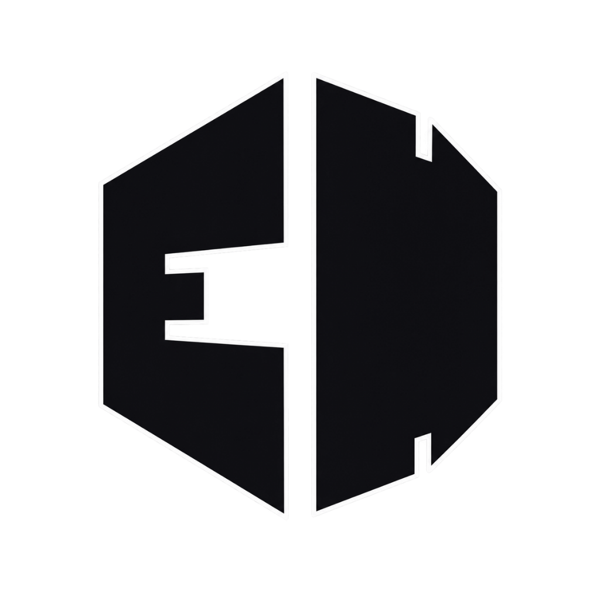

macOS
Universal
For Apple silicon and Intel Macs.

ElevateHubGet the Hub once. Install, launch, and update the Elevate studios your team uses from there.
View latest downloads Detecting your platform…ElevateHub handles the studios after installation. Because current builds are independently distributed, your operating system may show a security prompt.
xattr -rd com.apple.quarantine /Applications/ElevateHub.appElevateHub verifies signed update metadata and studio package hashes before installing new versions.